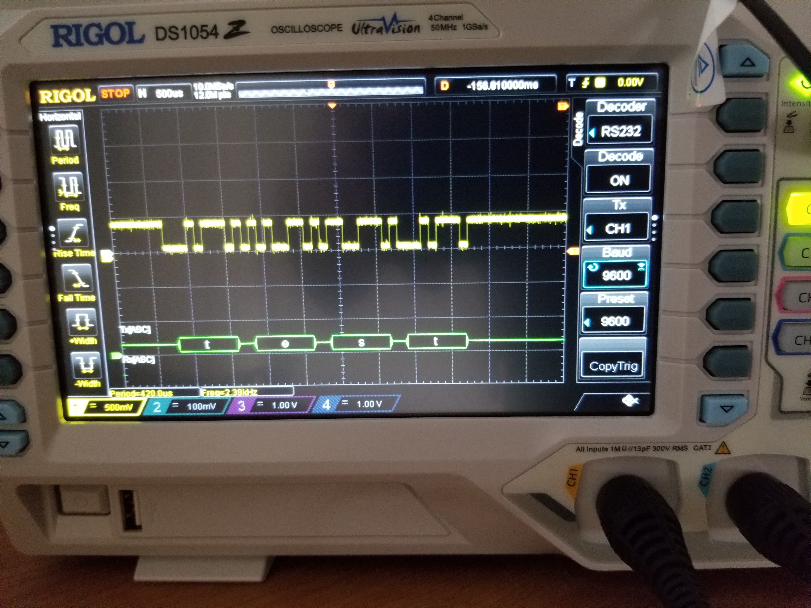
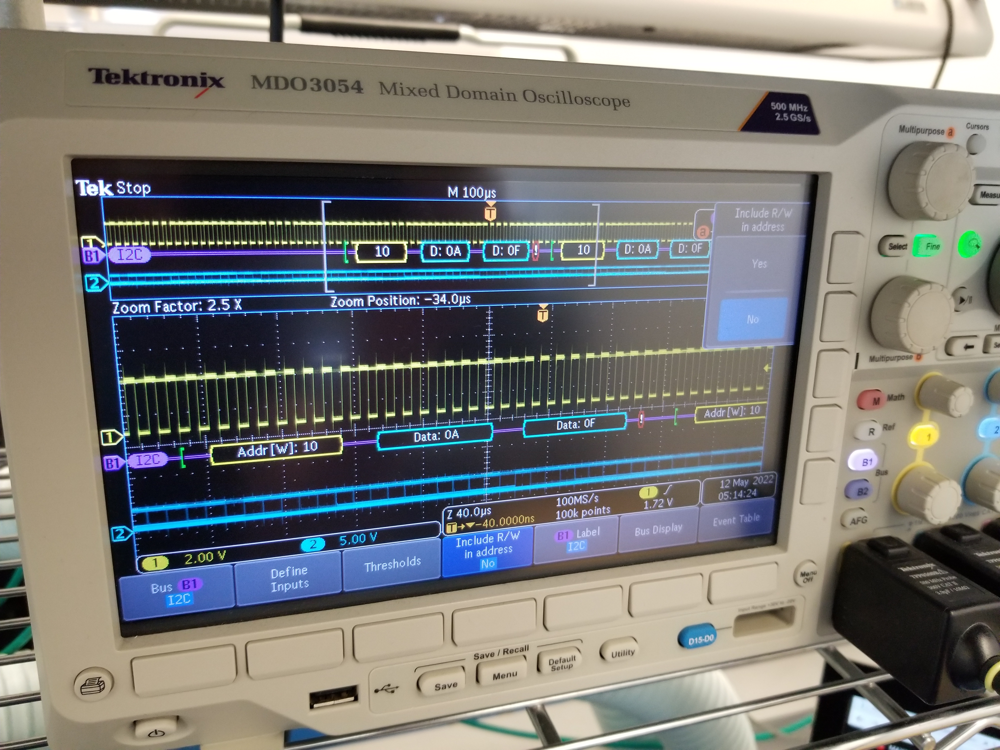

Lattice Development Board
Conestoga Research provided my capstone group with access to the Lattice ICE40 Ultraplus Development Board. While we did not end up using them in our capstone project we did learn about how to work with the Lattice FPGA platform and programmed several interfaces to work with the FPGA using Verilog. We will provide to them with a getting started with Lattice FPGAs document and our interface implementation code.

While we did not end up using the board in our design it was a valuable learning experience in FPGAs and Verilog programming. Below are a few scope photos of periperal interfaces I implemented in Verilog on the board.

